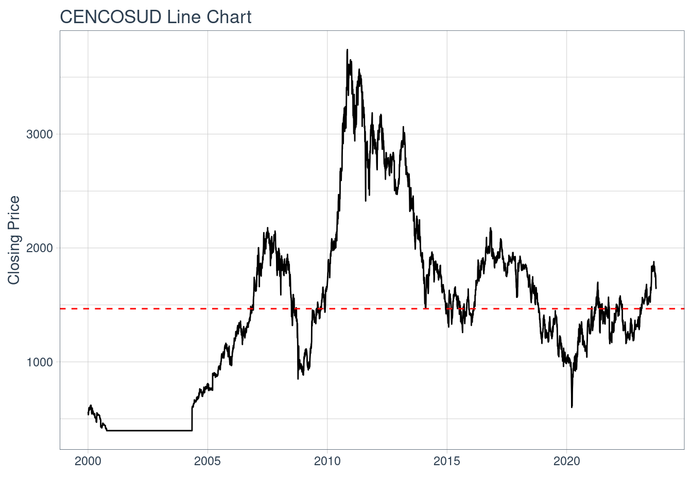
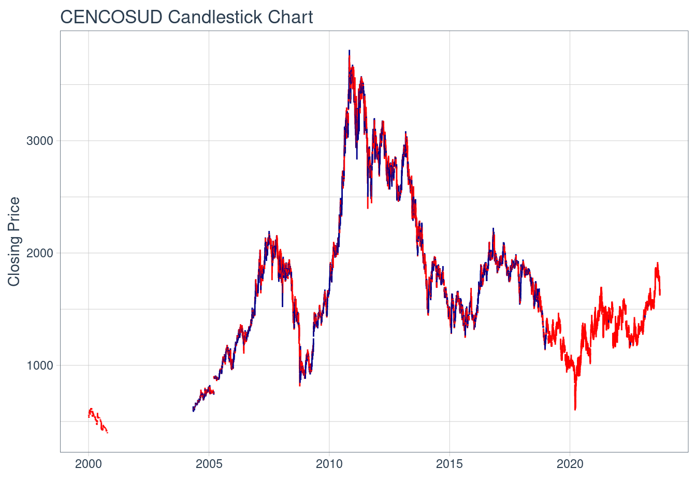
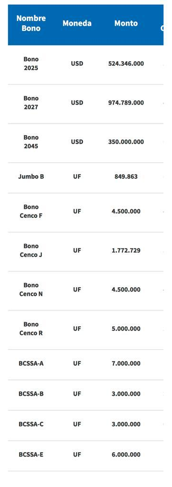
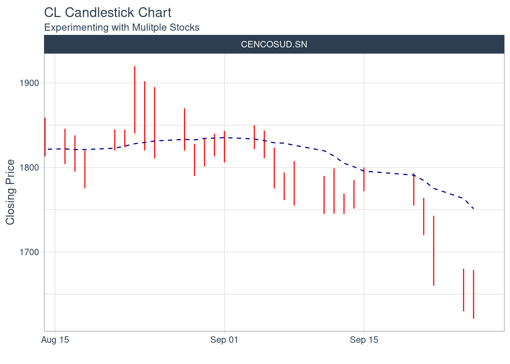
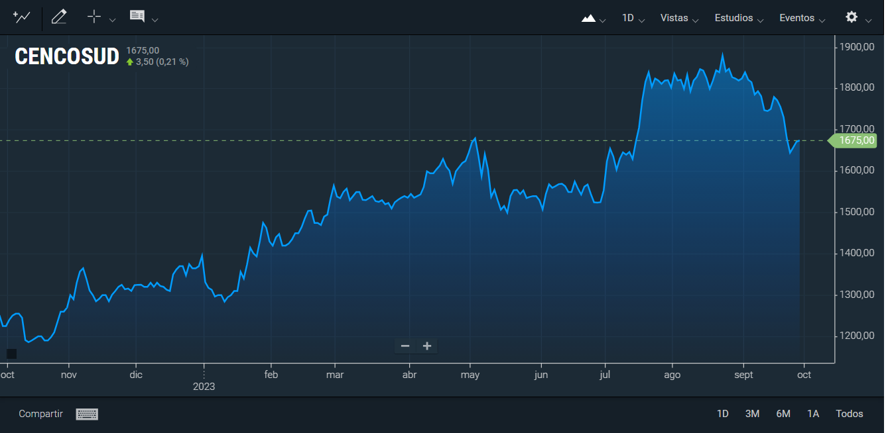

Plantilla Proyecto G15
Descripción Activo y Contexto (Hito 1)
Cencosud posee y opera varios centros comerciales en América Latina como parte de su cartera de activos inmobiliarios. Dichos centros comerciales son destinados principalmente a compras, entretenimiento, y que poseen gran variedad de tiendas minoristas, restaurantes, cines, etc.
Un ejemplo de esto es el Costanera Center en Santiago. Este es uno de los centros comerciales más grandes y emblemáticos del país, propiedad de Cencosud. Además de tiendas, el Costanera Center incluye un rascacielos llamado “Gran Torre Santiago,” que es uno de los edificios más altos de América Latina y contiene oficinas y un mirador panorámico. Este tipo de activo inmobiliario no solo genera ingresos a través del alquiler de espacio comercial a tiendas y restaurantes, sino que también aumenta el valor de la propiedad a medida que se desarrolla y atrae a más visitantes.
Definición
Un activo inmobiliario son propiedades físicas como estructuras y/o terrenos, y que tienen un valor económico además de utilizarse principalmente para generar ingresos en la mayoría de los negocios, ya sea a través de arriendos, venta u otros fines comerciales. Los activos inmobiliarios son sumamente importantes en el mundo de las inversiones, en este caso se propone estudiar los activos inmobiliarios pertenecientes a la empresa Cencosud como acciones.
Las acciones también son un tipo de activo, son un derecho de propiedad y control de un determinado porcentaje del total de la empresa de Cencosud. Corresponde a un instrumento de inversión de capitalización y su renta es variable, es decir, depende de los resultados de Cencosud en sus negocios. Además, los accionistas pueden recibir los dividendos que distribuya el emisor y en ocasiones, acciones liberadas de pago. De acuerdo al derecho que otorgan, las acciones pueden ser ordinarias o preferentes, lo que debe constar en los estatutos sociales y en los títulos respectivos.
La rentabilidad de una acción de Cencosud es lo que más le importa a un accionista, se puede definir como la relación entre el beneficio económico que proporciona la acción (precio y dividendos) y el capital invertido del accionista en un periodo de tiempo; es decir, los flujos obtenidos por tener la acción y el flujo de capital invertido en la adquisición de la acción.
El activo CENCOSUD tiene un valor promedio para el intervalo igual a 1467

Motivación
Mi principal motivación para estudiar activos inmobiliarios de Cencosud es que este destaca en posicionarse fuertemente en el mercado minorista y por operar de manera internacional en america latina.
La empresa Cencosud es conocida por su buen desempeño en innovación y excelencia operativa, lo que me genera un gran interés en aprender más de esta empresa e industria bajo la perspectiva financiera.
Me es sumamente importante profundizar en el análisis y la comprensión de los activos de Cencosud, ya que esto me permitirá adquirir conocimientos y habilidades valiosas en la gestión financiera. Además, considero que estudiar un activo de esta empresa me brindará una visión integral de cómo operan las grandes corporaciones en América Latina en la industria inmobiliaria, lo que será beneficioso para mi desarrollo profesional a largo plazo.
Contexto
Cencosud S.A. es un consorcio empresarial multinacional chileno que opera en diversos países de América como Chile, Argentina, Brasil y Perú, entre otros, principalmente en el rubro minorista. Fue fundado y es controlado por el empresario alemán nacionalizado chileno Horst Paulmann.
Sus principales variables/activos se centran en el comercio de tiendas minoristas, ventas/ingresos y deuda/financiamiento. Cencosud opera una gran variedad de tiendas minoristas en distintas categorías, dentro de las que más destacan están los centros comerciales.
Las ventas/ingresos como estudio, es una variable fundamental para evaluar el desempeño financiero que presenta en este caso Cencosud, mientras que en temas de deuda y financiamientos, estas variables nos pueden ayudar a identificar la salud financiera en la que se encuentra la empresa.
Cabe mencionar que existen factores externos a la empresa que pueden perjudicar radicalmente sus rendimientos, como por ejemplo la zona geográfica, la demanda de mercado, ofertas de mercado, economia nacional, tasas de interés, política (nuevas leyes), entre otros.
La estructura de la sociedad en términos de Patrimonio, este se divide en un total de 2.863.129.447 acciones de serie única, cuya composición porcentual por categoría de participante es:
 En cuanto a la variabilidad de las acciones en los últimos meses:
En cuanto a la variabilidad de las acciones en los últimos meses:
.png)
En este gráfico obtenido del Banco Central, se puede ver las variaciones del rendimiento de las acciones de Cencosud en periodo mensual de los últimos 6 meses, en el cual se puede observar una tendencia ascendente en cuanto a los porcentajes de rentabilidad, con lo que nos sirve para pronosticar hacia el futuro los proximos rendimientos.

En esta imagen obtenida del Banco Central, se puede ver la variación en rendimientos porcentuales del año actual con respecto al anterior, se observa que ha habido un aumento considerable con respecto al 2022, por lo que se ve un futuro prometedor en cuanto a rendimientos se refiere.
Deuda:
Bonos:
El principal instrumento de deuda utilizado por empresas es bono, corresponden a instrumentos de deuda emitidos por sociedades anónimas y/o otro tipo de entidades como alguna institución pública, un Estado, gobierno, municipio, etc., con el objetivo de obtener recursos directamente de los mercados de valores. Son emitidos para financiar proyectos de inversión de largo plazo, o para cumplir compromisos financieros del emisor como es el refinanciamiento de pasivos.
En el caso de Cencosud, ha emitido bonos desde el 2011, tanto en pesos chilenos como en uf y usd, de los cuales solo 12 siguen en vigencia:


Caracterización deuda (Aplicación cap. 15)
La deuda vigente de Cencosud está basada en su mayor parte por 12 bonos distintos vigentes, cada uno con su tipo de cambio, monto, tasa cupón y duración en años.
Partes de un bono:
Monto: es el monto que se indica en el bono. Es decir, es el valor nominal del bono.
El cupón: representa el interés que paga el bono.
El plazo (duración en años): representa el periodo de vigencia del bono.
Los bonos pueden dividirse en:
Bonos a tasa fija: la tasa de interés está prefijada y es igual durante toda la vida del bono.
Bonos con tasa variable (floating rate): la tasa de interés que se paga en cada cupón es distinta ya que está en función a una tasa de interés de referencia como puede ser la Libor. También pueden ser bonos indexados con relación a un activo financiero determinado.
Bonos cupón cero: no existen pagos periódicos, por lo que el capital se paga al vencimiento y no pagan intereses. Se venden con una tasa de descuento.
Por lo tanto, el interés en invertir en un bono, dependerá del monto de este, de su tasa cupón y de su duración en años, además de estos, según los intereses del inversionista, de tasa fija, variable o incluso cupón cero
Ejemplo de bonos Cencosud:

Un ejemplo de este último es el bono BJUMB-B1, fecha de emisión 01-09-2001, cuyo monto fue de UF 2.000.000, fecha de vencimiento 01-09-2026, tasa cupón de 6.5% tipo Francés
Por otro lado, Cencosud ha emitido únicamente acciones en forma de acciones comunes, por lo que no cuenta con acciones preferentes. Definiendo estos 2 tipos de acciones:
Acciones Comunes: corresponden al tipo de acciones a que a los dueños se les entrega una serie de derechos y son definidas en un plazo indefinido, es decir, que viene dado por la duración de la sociedad.
Acciones Preferentes: al igual que la anterior es un tipo de contrato, pero se otorgan privilegios o preferencias respecto a los dividendos, elección de directores u otras materias que estime la empresa. Sin embargo, deben ser de plazo definido.
Una componente fundamental de las acciones son los Dividendos, una característica distintiva de las corporaciones es que emiten acciones sobre las que están autorizadas por ley a pagar dividendos a sus accionistas. Los dividendos pagados a los accionistas representan un rendimiento del capital directa o indirectamente aportado a la corporación por los accionistas. El pago de dividendos se realiza a criterio del consejo de administración.
Por lo tanto, un accionista recibirá en intervalos acordados con la empresa emisora, dividendos que serán percibidos por el accionista como ingresos a raiz del buen rendimiento de la empresa en proporción al porcentaje que posean los accionistas de esta empresa, por lo que es lógico pensar que alguien se convertirá en accionista de Cencosud porque confía en proyecciones y en que Cencosud rentará en los proximos periodos.
Caracterización de emisiones históricas (Aplicación cap. 20)
La emisión es cuando las empresas desean recaudar nuevos fondos y lo hacen mediante la emisión pública o privada de valores conocida como OPI (oferta inicial al publico), con el objetivo de recaudar y financiar proyectos o gastos operacionales.
El proceso de emisión de Cencosud consta de 10 pasos:
- Decisión Estratégica: La empresa Cencosud, debe tomar la decisión de emitir acciones o valores para recaudar fondos para financiar la expansión, reducir la deuda existente, invertir en nuevos proyectos, entre otros.
- Regulación y Cumplimiento: La empresa debe cumplir con todas las regulaciones y requisitos legales relacionados con la emisión de valores.
- Selección de Asesores: Las empresas a menudo eligen asesores financieros, abogados y bancos de inversión para ayudar en el proceso de emisión.
- Valoración de la Empresa: Se realiza una valoración de la empresa para determinar el precio al que se emitirán las acciones.
- Documentación Legal: Se prepara la documentación legal necesaria para la emisión
- Anuncio de la Oferta Pública: La empresa anuncia la oferta pública, (OPI) especificando la cantidad de acciones que se emitirán y el precio de cada acción.
- Período de Suscripción
- Asignación de Acciones
- Cotización en el Mercado: Las acciones emitidas se cotizan en una bolsa de valores, lo que permite a los inversores comprar y vender acciones en el mercado secundario.
- Seguimiento Posterior a la Emisión: La empresa debe cumplir con los requisitos de divulgación continua y proporcionar informes financieros regulares a los inversores y a las autoridades reguladoras.
Por otra parte, el procedimiento de emisión descrito en el capitulo 20 consta de 5 pasos:
El procedimiento básico de una nueva emisión
1. El primer paso de la administración en el proceso de emisión de cualquier título al público es obtener la aprobación del consejo de administración.
2. En seguida, la empresa debe preparar una declaración de registro y presentarla ante la SEC. Esta declaración contiene mucha información financiera, que incluye, entre otras cosas, el historial financiero, los detalles sobre las operaciones actuales de la empresa, el financiamiento propuesto y los planes para el futuro. Fácilmente puede llegar a tener 50 o más páginas. El documento se requiere para todas las emisiones públicas de títulos, con dos excepciones principales:
a) Préstamos que vencen dentro de nueve meses.
b) Emisiones que implican menos de 5 millones de dólares.
La segunda excepción se conoce como la exención de emisiones pequeñas. Las emisiones inferiores a 5 millones de dólares se rigen por el Reglamento A, que requiere sólo un formato abreviado de registro de la oferta en lugar de una declaración completa. Para que el Reglamento A sea aplicable, las personas con acceso a información privilegiada no pueden vender más de 1.5 millones de dólares en títulos.
3. La SEC estudia la declaración de registro durante un periodo de espera. Así, la empresa puede distribuir copias de un prospecto preliminar. Éste se conoce como arenque rojo (red herring) por las letras rojas impresas en la portada. Un prospecto contiene buena parte de la información incluida en la declaración de registro y la empresa lo entrega a los posibles inversionistas, pero no puede vender los títulos durante el periodo de espera. Sin embargo, se pueden presentar ofertas verbales. El registro de la emisión entra en vigor 20 días después de la presentación de la declaración, a menos que la SEC envíe una carta de observaciones con sugerencias de cambios. Una vez realizados los cambios, se inicia de nuevo el periodo de espera de 20 días.
4. Inicialmente, la declaración de registro no contiene el precio de la nueva emisión. En la fecha cuando entra en vigor el registro de la emisión se determina el precio de los títulos e inicia la campaña de venta con todas las de la ley. Un prospecto definitivo debe acompañar la entrega de los títulos o la confirmación de la venta, lo que ocurra primero.
5. El anuncio publicitario sobre una nueva emisión (conocido en el medio como lápida) se utiliza durante y después del periodo de espera.

Fuente: Ross Westerfield Jaffe, Finanzas Corporativas, 9° edición
Entre los 2 procesos, se puede decir que el primero es mcuho más detallado, e incluye pasos muy personales o particulares para cada empresa como por ejemplo la decisión estratégica y la selección de asesores., por lo que es un set de pasos más personalizados.
Relación con activos derivados
Un derivado es un contrato en función de otro activo, en relación a esto, podemos definir un warrant, como derivado de un activo subyacente que será en este caso la acción común.
El valor de un warrant será directamente proporcional al valor que tendrá la acción común y la altura del precio del warrant por encima del limite inferior dependerá de: varianza en el rendimiento de acciones, tiempo hasta su vencimiento, tasa de interés libre de riesgo, precio de la accion, precio del ejercicio.
Además se puede valorizar el warrant mediante el modelo de Black and Scholes:

Además, cabe mencionar que la tasa de interés sirve para descontar flujos de efectivo futuros y para calcular la volatilidad implícita.
La utilización tanto de warrants como de opciones de compra, pueden lograr fomentar la activación del mercado secundario de venta de activos e incluso atraer a nuevos inversionistas.
Nuevamente, un ejemplo de esto, es el precio de las acciones en un lapso de 1 año obtenido del Banco Central:

Como los precios de las acciones comunes son directamente proporcionales a los de warrants, se puede ver que el precio de los warrants ha ido incrementando a lo largo de este último año junto con los de las acciones comunes.
Reporte grupal
Normalmente, los inversionistas no invierten todo su dinero en un solo
instrumento, sino que en más de uno, lo que se conoce como portafolio de inversión. ¿Por qué? Porque al diversificar o invertir en más de un instrumento se busca reducir el riesgo de la inversión total.
Para ello, se ha propuesto nuestro portafolios compuesto por 3 tipos de activos: Inmobiliario, Banca y Energía, y hemos asignado un porcentaje a cada uno dentro de nuestro portafolios:
Para la confección de nuestro portafolios diversificado de inversión, se consideró un peso de 50% para activos inmobiliarios porque son de bajo riesgo, ya que la adquisición de centros comerciales como los de Cencosud que opera de manera internacional, es uno de los segmentos más dinámicos, por lo que puede otorgar ganancias tanto a corto como largo plazo, lo que entrega una mayor producción de flujo de efectivo en comparación a otras inversiones inmobiliarias.
Otro de los principales beneficios de las inversiones en inmobiliaria son las protecciones contra la inflación, ya que al menos en Chile, los precios de este tipo de activo se determinan en UF en el caso de adquirir propiedades. Por otro lado, este tipo de inversión es menos riesgosa para obtener ingresos pasivos.
Además de esto, los rendimientos porcentuales específicamente de los activos de Cencosud, se han visto al alza en los últimos meses, lo que es un buen indicativo de que seguirá al alza los meses siguientes (rubro minorista en nuestro caso)
Para la energía se escogió Empresas Copec S.A, la cual hoy en día está formando parte de muchos proyectos sustentables tanto en Chile como en el extrangero. Se acordó que formará parte del portafolio con un 35%, esto debido a que pese a que la industria de la energía está en constante progreso, con el objetivo de generar métodos más sustentables para la producción y utilización de esta, aún está en constante desarrollo. Este trae consigo cierta incertidumbre en todos sus ámbitos sobre todo en las grandes inversiones que se realizan para hacer pruebas y testeos de los nuevos sistemas que se implementan. Pero pese a eso el mundo energético tiene una buena proyección a un mediano-largo plazo, donde se espera tener grandes avances para implementar energías renovables y sustentables que generen menores emisiones y tengan un aporte significativo en la sociedad.
El 15% de este portafolio está destinado al activo bancario, el cual es el fondo mutuo Bci USA. Este se caracteriza por ser parte del mercado accionario de Estados Unidos, se invierte en deuda y en capitalización, e invierte como mínimo el 60% de sus activos en acciones de empresas que operan en Estados Unidos. Es un fondo de gran diversificación y te permite invertir en el mercado internacional, pero la razón por la que le dimos un porcentaje tan bajo, es que tiene un perfil muy agresivo, lo que implica constantes fluctuaciones negativas y la posibilidad de ganancias en el largo plazo. Por lo que como grupo decidimos ser adversos al riesgo y centrarnos en opciones más seguras e innovadoras.